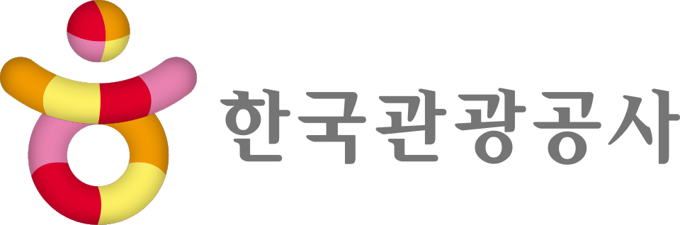
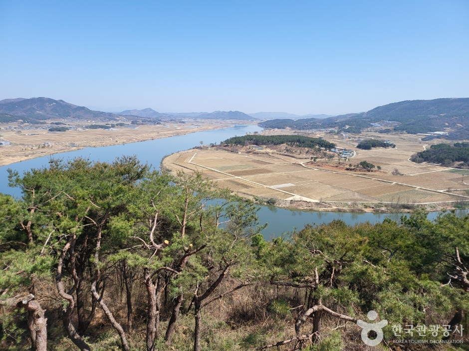

데이터가 진단한 “살릴 자원은 있는데 소외된” 쇠퇴 소도시를 테마로 매칭하고, 관광 콘텐츠로 코스를 만들어 체류·재방문·생활인구까지 잇습니다.
2026 관광데이터 활용 공모전 · 데이터 한국관광공사 TourAPI

쇠퇴 × 문화유산으로 뽑은 소도시와 실제 관광 콘텐츠를 지도로. 데이터가 “살릴 자원은 있는데 소외된” 곳을 짚어줍니다.
명소·맛집을 현실적 동선으로 묶은 하루 일정. 구간별 이동시간·경로를 한눈에.
며칠 머무는 체류형 코스 + 로컬 일자리·장기 숙소로 워케이션·한달살기. 관광을 생활인구로.
전국 시군구 복합 관광쇠퇴지수 단계구분도(Jenks 자연분류).
데이터·3축 계산식·알고리즘·한계까지 지수 산출 방법 설명.